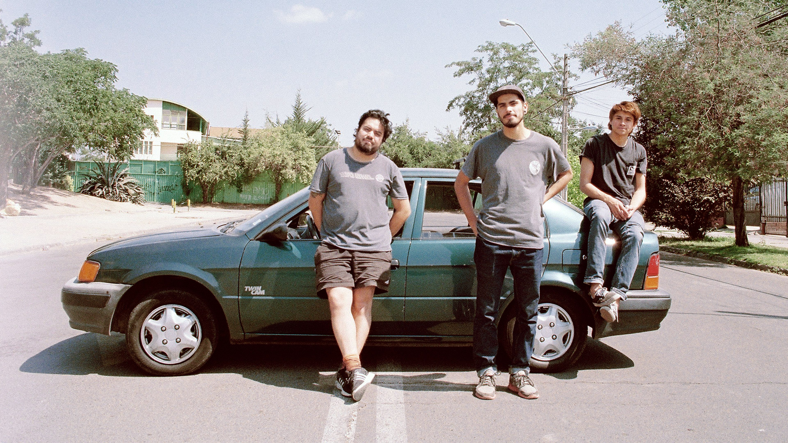

Descarga Directa -
Youtube
Animales Extintos - Los vientos y las ganas (Ep)
Los Vientos y las Ganas, contiene 5 canciones llenas de potencia y honestidad que se mueven entre el punk, el rock y el pop donde Animales Extintos canta sobre historias de amistad, amor y escapar de lo cotidiano. El álbum, fue grabado en Estudios Rob, por Simón Campusano y Pepe Mazurett (integrantes de Niños del Cerro).